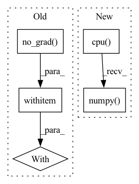

Pattern ID :3720
Before Change
if not isinstance(state, torch.Tensor):
state = torch.FloatTensor(state[None, :]).to(util.device)
with torch .no_grad():
action_scaled, log_prob = \
itemgetter("action_scaled", "log_prob")(self.policy_network.sample(state, deterministic))
return {After Change
action = action[0]
log_prob = log_prob[0]
return {
"action": action.detach().cpu().numpy() ,
"log_prob" : log_prob
}
In pattern: SUPERPATTERN
Frequency: 4
Non-data size: 5
Instances Fragment ID: 13957628
Project Name: x35f/unstable_baselines
Commit Name: fd650918d0f96ab53625afed362025e5a53c10a6
Time: 2022-06-13
Author: 1621322691@qq.com
File Name: unstable_baselines/baselines/sac/agent.py
M Class Name: SACAgent
N Class Name: SACAgent
M Method Name: select_action(3)
N Method Name: select_action(3)
M Parent Class: BaseAgent,torch.nn.Module
N Parent Class: BaseAgent,torch.nn.Module
M File Name: unstable_baselines/baselines/sac/agent.py
N File Name: unstable_baselines/baselines/sac/agent.py
M Start Line: 148
M End Line: 158
N Start Line: 140
N End Line: 152
Before Change
image = self.scheduler.step(model_output, t, image, eta)["prev_sample"]
// decode image with vae
with torch .no_grad():
image = self.vqvae.decode(image)
return {"sample": image}
After Change
image = self.vqvae.decode(latents)
image = (image / 2 + 0.5).clamp(0, 1)
image = image.cpu().permute(0, 2, 3, 1).numpy()
return {"sample": image}
Fragment ID: 13957624
Project Name: huggingface/diffusers
Commit Name: 8b4371f70fb5e791f4467a30375ef226bc5186a9
Time: 2022-07-20
Author: anton@huggingface.co
File Name: src/diffusers/pipelines/latent_diffusion_uncond/pipeline_latent_diffusion_uncond.py
M Class Name: LatentDiffusionUncondPipeline
N Class Name: LatentDiffusionUncondPipeline
M Method Name: __call__(6)
N Method Name: __call__(6)
M Parent Class: DiffusionPipeline
N Parent Class: DiffusionPipeline
M File Name: src/diffusers/pipelines/latent_diffusion_uncond/pipeline_latent_diffusion_uncond.py
N File Name: src/diffusers/pipelines/latent_diffusion_uncond/pipeline_latent_diffusion_uncond.py
M Start Line: 26
M End Line: 52
N Start Line: 26
N End Line: 49
Before Change
sigma_t = self.scheduler.sigmas[i] * torch.ones(shape[0], device=device)
for _ in range(self.scheduler.correct_steps):
with torch .no_grad():
model_output = self.model(sample, sigma_t)
if isinstance(model_output, dict):
model_output = model_output["sample"]After Change
sample, sample_mean = output["prev_sample"], output["prev_sample_mean"]
sample = sample.clamp(0, 1)
sample = sample.cpu().permute(0, 2, 3, 1).numpy()
return {"sample": sample}
Fragment ID: 13957625
Project Name: huggingface/diffusers
Commit Name: 8b4371f70fb5e791f4467a30375ef226bc5186a9
Time: 2022-07-20
Author: anton@huggingface.co
File Name: src/diffusers/pipelines/score_sde_ve/pipeline_score_sde_ve.py
M Class Name: ScoreSdeVePipeline
N Class Name: ScoreSdeVePipeline
M Method Name: __call__(3)
N Method Name: __call__(3)
M Parent Class: DiffusionPipeline
N Parent Class: DiffusionPipeline
M File Name: src/diffusers/pipelines/score_sde_ve/pipeline_score_sde_ve.py
N File Name: src/diffusers/pipelines/score_sde_ve/pipeline_score_sde_ve.py
M Start Line: 27
M End Line: 48
N Start Line: 28
N End Line: 51
Before Change
if self.obs_normalizer is not None:
mean, var = self.obs_normalizer.mean, self.obs_normalizer.var
observations = (observations - mean) / np.sqrt(var + 1e-8)
with torch .no_grad():
policy, _ = self.nn(torch.tensor(observations, dtype=torch.float32, device=self.device))
action, log_prob = self.distribution.sample(policy, deterministic)
if return_pi:
return action, policyAfter Change
observations = [[observations]]
action, log_prob = self._act(observations, return_pi, deterministic)
if self.testing:
return action.cpu().numpy() [0, 0]
return action, log_prob
Fragment ID: 13957627
Project Name: cherrypiesexy/imitation_learning
Commit Name: 60964599d67129e5dea6a4de74157227cae02efe
Time: 2020-09-06
Author: dmitry.akimov@giant.ai
File Name: algorithms/policy_gradient.py
M Class Name: AgentInference
N Class Name: AgentInference
M Method Name: act(4)
N Method Name: act(4)
M Parent Class:
N Parent Class:
M File Name: algorithms/policy_gradient.py
N File Name: algorithms/policy_gradient.py
M Start Line: 57
M End Line: 68
N Start Line: 62
N End Line: 67